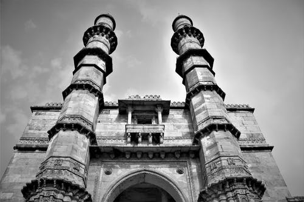

Blog‐1: Ahmedabad at a Glance
Read More...
Blog‐2: Ahmedabad World Heritage City
Read More...Blog‐3: Ahmedabad Traditional Culture
Read More...

With total Area of 8087 sq.k.m. Ahmedabad is geographically at the centre of Gujarat, situated between 21.6 to 23.4 north latitude and 71.6 to 72.9 east longitude. Total population of District is 74,86,573 (2014). Ahmedabad District is surrounded by Kheda District in the east, Mehsana in the north, Anand District in the south and Surendranagar in the west. 14 talukas of the District include 556 villages, 1 corporation, 1 cantonment area and 7 municipalities.
Ahmedabad is the largest city in the State of Gujarat and the Seventh- largest urban agglomeration in India, with a population of almost 74 lakhs (7.4 Million). City is Located on the banks of the River Sabarmati. The city is the administrative centre of Ahmedabad district, and was the capital of Gujarat from 1960 to 1970; the capital was shifted to Gandhinagar thereafter. The city was at the forefront of the Indian independence movement in the first half of 20th century. It was the epicentre of many campaigns of civil disobedience to promote workers’ right, civil rights and political independence. Mahatma Gandhi also established Gandhi Ashram on the bank of river Sabarmati and selected Ahmedabad as his “Karmabhumi”.
The city was founded in 1411 to serve as the capital of the Sultanate of Gujarat, by its namesake, Sultan Ahmed Shah. Under British rule, a military Cantonment was established and the city infrastructure was modernized and expanded. It was part of the Bombay Presidency during the British rules in India. Kankaria Lake, in the neighbourhood of Maninagar, is an artificial lake developed by Qutb-ud-din Aibak, the Sultan of Delhi, in 1451 A.D. The city is also called Karnavati, a name for an older town that existed in the walled area.
Ahmedabad remained the most important city in the Gujarat region. The City established itself as the home of a booming textile industry, which earned the nickname “The Manchester of India.” With the creation of the state of Gujarat in 1960, Ahmedabad gained prominence as the political and commercial capital of the state. Once characterized by dusty roads and congested localities, the city is witnessing a major construction boom and population increase. A rising centre of education, information technology and scientific industries, Ahmedabad remains the cultural and commercial heart of Gujarat, and much of western India. Since 2000, the city has been transformed through the construction of skyscrapers, shopping malls and multiplexes.
The BRTS and the Sabarmati River Front development project are also under progress. Kankaria Lake, Siddi Saiyad’s Jali, Jama Masjid, Roza of Sarkhej are the historical monuments/places situated in the city. Gandhi Ashram, Abhay Ghat (Samadhi of Late. Prime Minister Shri Moraraji Desai) Science City, Vaishnovdevi Temple, ISCON Temple are also famous for the tourists attraction. Lothal, Step-Well of Adalaj & Akshardham Temple are also very famous tourist places nearby. A famous Swaminarayan Temple is also situated in Sarangpur of Barvala Taluka of Botad District, which is a newly created district from parts of Ahmedabad and Bhavnagr. Nal Sarovar Lake is also a famous Bird Sanctuary where migratory birds from Central Asia visit every year in winter season, is situated in the Ahmedabad District.
The city of Ahmedabad is endowed with a rich architectural heritage that is vital to the local identity and continuity of the place. Along with the foremost heritage Indo-Islamic monuments of the 15th to 17th centuries, there are potential heritage precincts in the form of the Pols, the traditional residential clusters of the medieval period, which makes Ahmedabad exceptional. Combining these all, the historic walled city of Ahmedabad has it all to be the first city in India to be inscribed in UNESCO's World Heritage City list of 2017.
Historic City of Ahmedabad: Situated in the heart of Gujarat, Ahmedabad has a character like no other, defined by a spirit of enterprise. Although Ahmedabad is a bustling metropoliton with reputed institutes and a rapidly growing economy, it is also deeply rooted in tradition. The city is known for its association with Mahatma Gandhi and in addition to a complex maze of neighbourhood called pols, hosts some of the country’s finest medieval Islamic Architecture.
The city of Ahmedabad was formerly known as Ashawal of Asha Bhil; Karnavati of Karanadev, Ahamdabad of Sultan Ahmed Shah, Rajnagar, the capital of Jainism, a politico-cultural city of Mahatma Gandhi and Sardar Patel and Amdavad of 'Amdavadis'. The Britishers spelled it as Ahmedabad and it became internationally known as Ahmedabad. But in vernacular language, it became popular as Amdavad and all the Gujaratis know it as Amdavadis. The citizens are known as Amdavadis across the world.
There are hundreds of temples, mosques and other pilgrim spots in the city. Among all, one spot glaringly draws our attention, which is none other than Sabarmati Ashram, offered to the nation by Gandhiji, his humble residence known as Hridaykunj.
Ahmedabad is a perfect place for people visiting and visiting great tourism attractions along with the number of attractions to explore in and around the city. Ahmedabad enjoys rich cultural traditions, it is the center of Gujarati cultural activities and has various traditions of different ethnic and religious communities. The festivals celebrated here include Ganesh Chaturthi, Navaratri and Diwali. The celebration of the celebration and worship includes the annual annual kite festival on 14 January. Navratri nights are celebrated with various folk songs of Gujarat in different places in the city.
Deepavali celebrates the festival of light, celebrated with lamps in every home. An annual Rath Yatra on Vikram Samit’s Jadh-Sud-Bij and an integral part of the celebration of Tajali in the Muslim holy month of Muharram, the hare culture.
Ahmedabad city is rich with rich architectural heritage which is important for the local identity and continuity of the place. The property of leading heritage is the Indo-Islamic monuments of the 15th to 17th centuries: the tombs of the jamas, three gates, the elite gate and historic roots, and the tombs of the queen and kings, the rest of the castle walls, 12 original gates and other archaeological surveys Indian (ASI) Protected by. In addition to these monuments, there is a potential legacy limit in the form of poles, which are traditional residential clusters of medieval period, making Ahmedabad extraordinary.
Also known as the Shaking Minarets, they are playful but with a whir of quivering mystery. They have left the best of architects and pioneering design engineers intrigued and in unresolvable wonder. What they cannot unravel is when one minaret is shaken the other begins to vibrate, though the connecting passage between the two remains vibration-free; what causes this vibration is unknown. There are two well-known pairs of Shaking Minarets in Ahmedabad, one located opposite the Sarangpur Darwaja and the other near the Kalupur Railway Station Area.
The one near Sarangpur Darwaja is within the vicinity of the Sidi Bashir Mosque built in 1452 AD by Sidi Bashir, a slave of Sultan Ahmed Shah. They are three storeys tall with carved balconies where visitors were once allowed to climb all the way up. The other set of minarets near the Railway Station is taller in height. However, these are not in a very good condition as it is believed that the British had dismantled them to understand the cause of vibrations. They could not resolve the engineering and it was not possible to put them back in their original condition. Demonstrations of the minarets shaking or vibrating are not carried out anymore.
How to get there:
By Road‐Gujarat has one of the better developed road networks in India. Ahmedabad is well connected with all major cities and towns by road. State and private buses are a great option to travel between smaller towns in the state.
By Train‐Major Indian cities are also connected via the Ahmedabad railway station that lies on the western railways network. The main railway station is located in Kalupur area. This station falls under the prominent national railway circuit and is connected to all major cities of India. India’s first bullet train project will be connecting Mumbai to Ahmedabad by December 2023. It will run at a speed of 320 kmph and cover the distance in 3 hours.
By Air‐Sardar Vallabhbhai Patel Airport in Ahmedabad connects all major cities in India and key cities abroad to the state.
Kankaria Lake is the second largest lake in Ahmedabad, Gujarat, India. It is located in the south-eastern part of the city, in the Maninagar area. It was completed in 1451 during the reign of Sultan Qutb-ud-Din Ahmad Shah II though its origin is placed in the Chaulukya period sometimes.
Kankaria lake can be found in the south-eastern section of Ahmedabad near the Maninagar area, in Gujrat. It is said to be the second largest lake in the city. Multiple tourist spots like the zoo, kids city, toy-train, hot-air balloon ride, water-based rides and other such entertainment attractions are in abundance in the lakefront that has been developed around Kankaria lake. However, it wasn’t like this since the beginning.
Recently there was reconstruction and reworking of the lakefront, by the Ahmedabad Municipal Corporation (AMC). In the past, due to negligence, Kankaria lake dried up and became dirty thereby rendering it useless, but with the joint efforts of AMC and the government, it is now a revamped place that is a major tourist attraction. Various kinds of social, cultural and similar activities take place here.
The construction of the lake was done by some of the finest Mughal architects of the time as evident from the different cuttings and designs in the stones that have been employed to construct the polygonal shaped reservoir that resides right in the middle of this lake.
Kankaria lake consists of an island that encompasses Nagina Wadi, which is a garden, right in the middle of it. This place in itself is a beautiful tourist spot here. Nagina means jewel here. The garden further consists of a summer palace which goes by the name of Ghattamandal.
A bridge connects with the bank that was originally 48 arches long. Many have mentioned this kind of architecture as a magnificent piece of the Mughal era, and just like a centre piece in jewellery, it is also known as the centre jewel of the lake.
Indian Institute of Management Ahmedabad (IIM Ahmedabad) is a business school located in Ahmedabad, Gujarat, India. The school has been accorded the status of an Institute of National Importance by Ministry of Human Resources, Government of India in 2017.Established in 1961, the institute offers master's degree programs in management and agri-business management, a fellowship program and a number of executive training programs.The institute's founding director is Errol D'Souza.Other notable founding figures were the Indian physicist Vikram Sarabhai, Indian businessman Kasturbhai Lalbhai and Indian educator Kamla Chowdhary.
The IIM Ahmedabad campus is situated across 102 acres in Vastrapur, Ahmedabad. The campus houses the academic blocks, faculty offices, student and faculty accommodation, the Vikram Sarabhai Library, the R.J. Matthai Auditorium, the Louis Kahn Plaza, the International Management Development Centre, the Kasturbhai Lalbhai Management Development Centre, the Centre for Innovation, Incubation and Entrepreneurship, sport facilities, several food outlets and merchandise stores.
In 1962, the IIM Ahmedabad board came to a formal agreement with the National Institute of Design (NID) for the latter to undertake the task of designing the IIM Ahmedabad campus. The National Institute of Design appointed American architect Louis Kahn and B.V. Doshi as architects for the project. Kahn worked on the IIMA project from 1962 until his death in 1974.
Kahn's architecture is characterized by the use of exposed red bricks, the extensive use of geometric shapes in hostels and academic blocks and vast corridors outside the classrooms. He combined Indian traditional and vernacular architecture and modern architecture skillfully. A number of tourists and architecture students often visit the campus for its phenomenal architectural impact.
Adalaj Stepwell or Rudabai Stepwell is a stepwell located in the village of Adalaj, close to Gandhinagar city in Gandhinagar district in the Indian state of Gujarat, and considered a fine example of Indian architecture work. It was built in 1498 in the memory of Rana Veer Singh by his wife, Queen Rudadevi.The stepwell was built by Mahmud Begada in 1411, to commemorate Queen Rudabai, wife of Veersinh, the Vaghela chieftain. It served both a utilitarian and spiritual purpose for the people around. A number of people from villages around once filled water from this stepwell.
The flamboyant 15th-century stepwell, has lost only little of its grandeur over the last few centuries. Till date, the intricate carvings on the pillars that support the five storeys are mostly intact; the beams work as pit stops for pigeons flying in and out and the structure still leaves jaws dropped for swarms of people. The step-well represents the Indo-Islamic fusion architecture that percolated through the many stepwells of the period. There are some fascinating features of the vav that make this an important emblem of superior architecture. The opening in the ceilings above the landing allows light and air to enter the octagonal well, but direct sunlight never touches the steps except at noon. It is said that the temperature inside the well is six degrees cooler than outside.
The stepwell has three entrances. The stairs lead to an underground storey, which has an octagonal opening on top. The walls are covered in ornamental carvings with mythological and village scenes. Some of them include Ami khumbor (a pot that contains the water of life) and the Kalp vriksha (a tree of life) carved out of a single slab of stone. There is a belief that the small frieze of Navagraha (nine-planets) towards the edge of the well protects the monument from bad omens.
The lanes of old Ahmedabad are having a very organized habitat design called pols. Pol houses are considered as primary housing typology built for more than three hundred years in the old city of Ahmedabad. Ahmadabad has a rich heritage of settlement patterns in its historic old town, the communal riot and the civil disorder of 18th century lead to the construction of pol houses which were organized in dense clusters consisting of two ends which have a single gateway. The residents of each cluster always belong to the same religion not only same religion but also to the same caste, family or same occupation.
So a pol is a combination of many multistory individual houses which form a neighborhood which has their own urban structure which is self-sufficient for the communities.
The most attractive and eye-catchy fact about pol houses are its exquisitely, lavishly and intricately carved wooden panels which are adorning the entrance, wooden pillars, brackets etc. The detailing of each piece of art is exceptional at the same time confusing in its identity. At one glance all appear same but there are very little slight differences in each figure. The artistry of each piece will give an observer an awestruck, which can easily take to that era and will force to think that how much time must have spent on each piece to get this perfection, the patient level of those artisans and the impeccable and unimpeachable artistry.
In huge houses where there are lot many intricate ornamentations, a keen observer can sometimes see some unfinished carvings, that can easily lead the thought process to another level. what must have been the reason the artist left it incomplete? One another question what comes to mind will be, how did these carvings are so much similar? It is astonishing that even after these many years, these wood carvings are still alive and young. The changes of sun and moon, the breezy winter and freezing cold nights, the steamy and dusty summer days; nothing, absolutely nothing could ruin them.
Even after these many years, there are havelis which are absolutely abandoned and still in good condition. The architectural style of these havelis is clearly showing an amalgamation of Mughal-Maratha influence. The intricately carved flora and fauna, mythical characters like yali, the parrots and peacocks, human figures, all these are creating a royal extravaganza to the visitors.
In May 1997, the Ahmedabad Municipal Corporation launched a Special Purpose Vehicle (SPV) - the Sabarmati Riverfront Development Corporation Limited (SRFDCL) under Section 149(3) of the Indian Companies Act, 1956. The project aims to provide Ahmedabad with a meaningful waterfront environment along the banks of the Sabarmati River and to redefine an identity of Ahmedabad around the river. The project has reconnected the city with the river and has positively transformed the neglected aspects of the riverfront.
Sabarmati Riverfront is a waterfront being developed along the banks of Sabarmati river in Ahmedabad, India. Proposed in the 1960s, the construction began in 2005. Since 2012, the waterfront is gradually opened to public as and when facilities are constructed and various facilities are actively under construction.
Urban forestry is the new thrust area to increase the green cover in the city and enhance the livability in the neighbourhoods and to provide the City with much needed Green spaces and respite from the dense built environment. The Biodiversity Park and the Miyawaki plantation along with other Parks & Gardens at Sabarmati Riverfront has increased the Green cover of the City and consists of variety of native, fruit bearing Trees and also has many endangered species of Trees.
The Sidi Saiyyed Mosque, popularly known as Sidi Saiyyid ni Jali locally, built in 1572-73 AD, is one of the most famous mosques of Ahmedabad, a city in the state of Gujarat, India.
The mosque is entirely arcuated and is known for its ten intricately carved stone latticework windows (jalis) on the side and rear arches. The rear wall is filled with square stone pierced panels in geometrical designs. The two bays flanking the central aisle have reticulated stone slabs carved in designs of intertwined trees and foliage and a palm motif. This intricately carved lattice stone window is the Sidi Saiyyed Jali, the unofficial symbol of city of Ahmedabad and the inspiration for the design of the logo of the Indian Institute of Management Ahmedabad.
The central window arch of the mosque, where one would expect to see another intricate jali, is instead walled with stone. This is possibly because the mosque was not completed according to plan before the Mughals invaded Gujarat.